The map and the inspector
The map shows a run's single substitutions, positions across and substitutions down, on a scale centered on the wild type; a run of nucleotide variants is read for the protein changes they make. Click any cell for its evidence in the inspector.
Reading the map
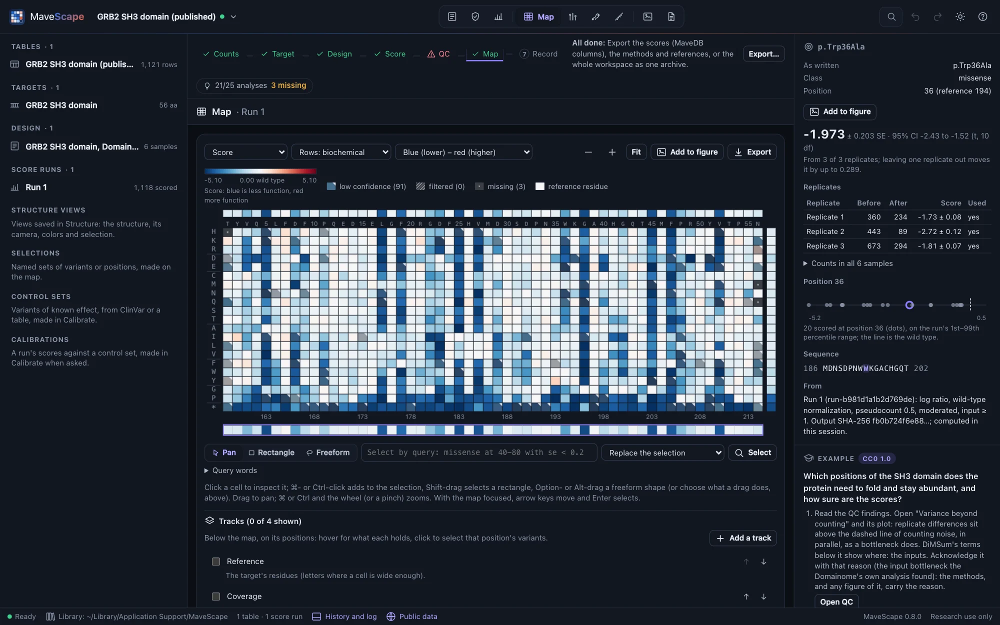
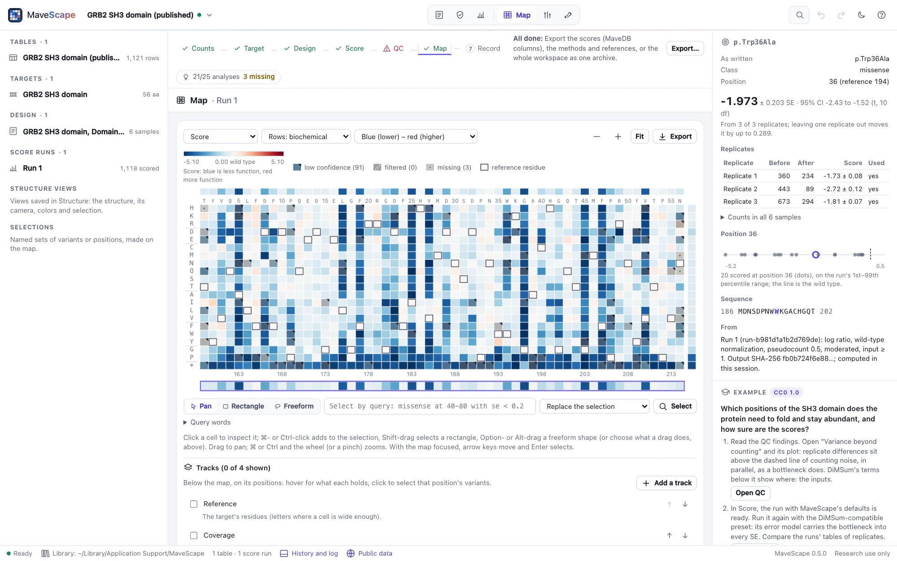
- Scored cells are colored by score on a diverging scale centered on the wild type and symmetric about it. Low scores are blue and high scores red. Which end is loss of function depends on the assay, so the legend names the ends from the readout ("less function", "more function") when the design states its direction, and says only "lower" and "higher" otherwise (What the assay measures).
- Low confidence cells (fewer replicates than expected, or a zero count) are drawn paler, with a corner mark.
- Filtered cells are hatched; missing cells (not in the table) are gray with a dot; cells outside the designed tiles are left empty. None of them is ever drawn as "no effect": each is at least ΔE 10 from the neutral color in both themes and both palettes.
- The reference residue at each position is outlined.
Above the map, the median score of each position; at the right, of each substitution. Positions are numbered on the target and, with an offset, on the reference. The overview strip below shows where the view is.
Nucleotide variants, at the protein level
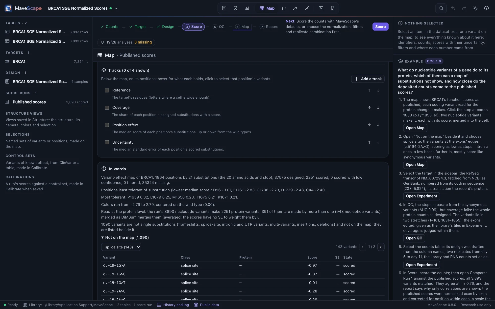
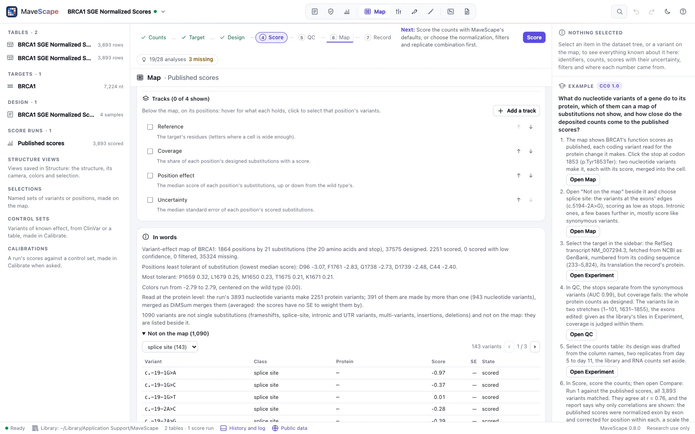
A run whose variants are named at the nucleotide level, on a DNA target (a codon library, a saturation genome editing screen, a table from MaveDB's hgvs_nt), is scored variant by variant as named, and each variant is read for the protein change it makes (Variant names): c.5559C>G is p.Tyr1853Ter, a nonsense variant; c.6T>C may be p.Ala2=, synonymous; c.5194-2A>G is at a splice site, with no protein change to name.
The map draws the protein: the nucleotide variants that make the same change (two codons for the same substitution, or two synonymous codons) are one cell, merged as DiMSum merges them: their scores weighted by 1/SE², the merged SE √(1/Σ 1/SE²) (averaged unweighted when the table gives no SEs). A variant that changes one amino acid and leaves another codon synonymous is left out of the cell, as DiMSum leaves it out. In words says how many nucleotide variants made how many protein variants, and how many were merged. The run's scores stay the nucleotide variants', and the Record menu also writes them at the protein level (A run's files).
Not on the map
A map of substitutions cannot show a frameshift, an insertion or deletion, a multi-variant, a splice-site, intronic or UTR variant. Beside the map, Not on the map lists every one, in order along the target, with its class, its protein change and its score or why it has none; choose a class to see only those. Click one to inspect it.
Settings
- Color by score, standard error, replicates used, input count (log), or for a run that compares conditions the differential score: each condition against the reference, centered on no difference, a variant with no difference shown filtered with why (Scoring).
- Rows in biochemical order (charged, polar, aliphatic, aromatic, special, stop), by hydrophobicity or alphabetically.
- Colors: blue–red or purple–orange.
- Zoom with ⌘ or Ctrl and the wheel, or the buttons; drag to pan; Fit shows the whole map.
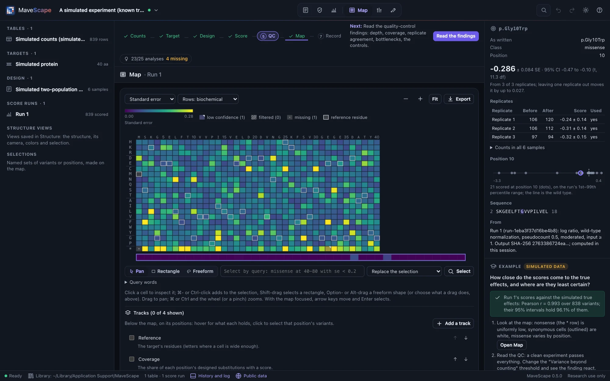
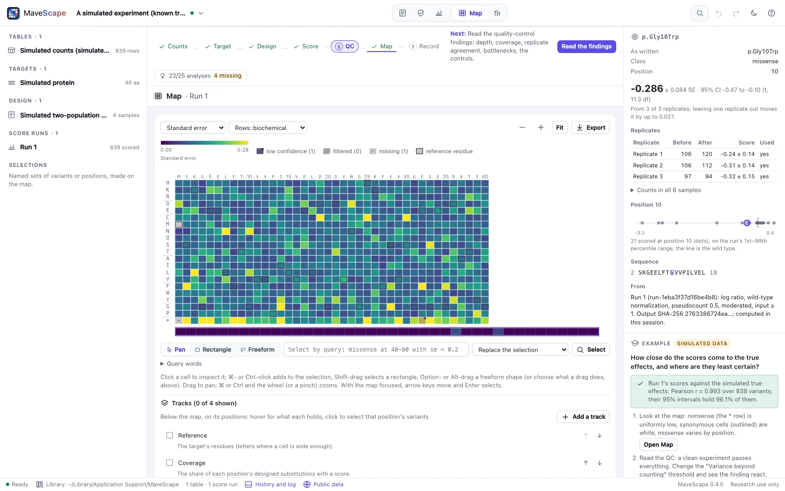
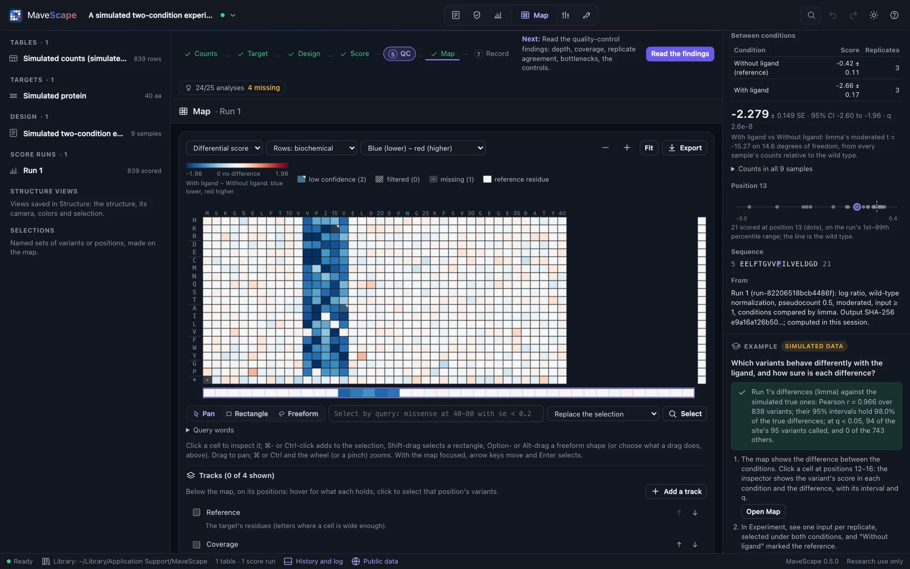
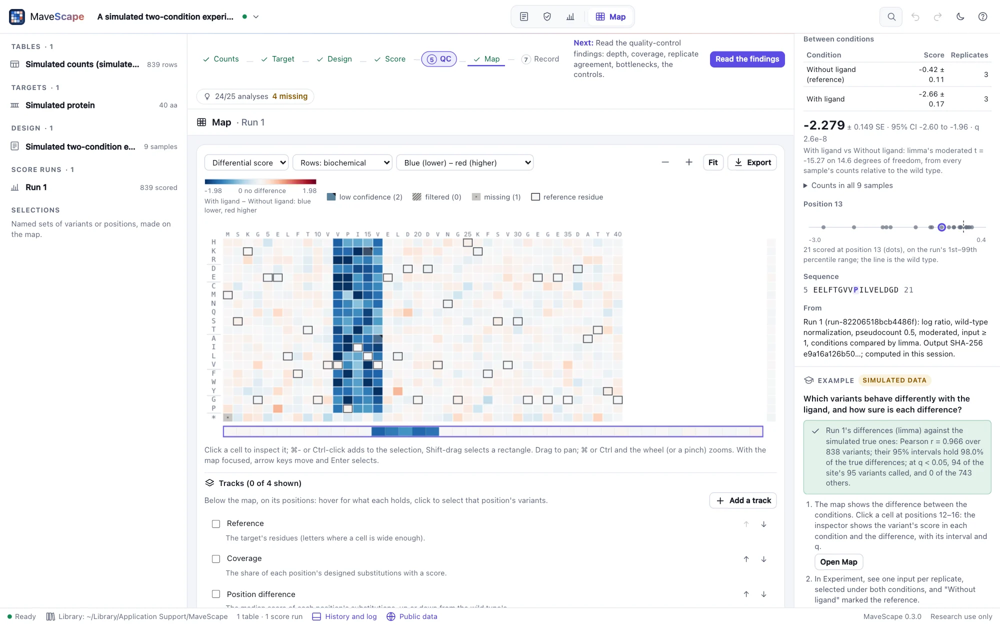
Tracks
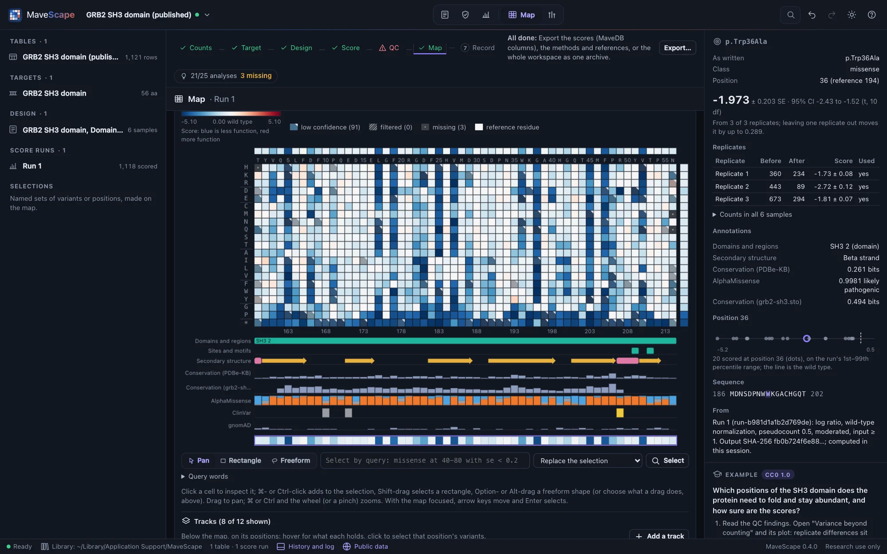
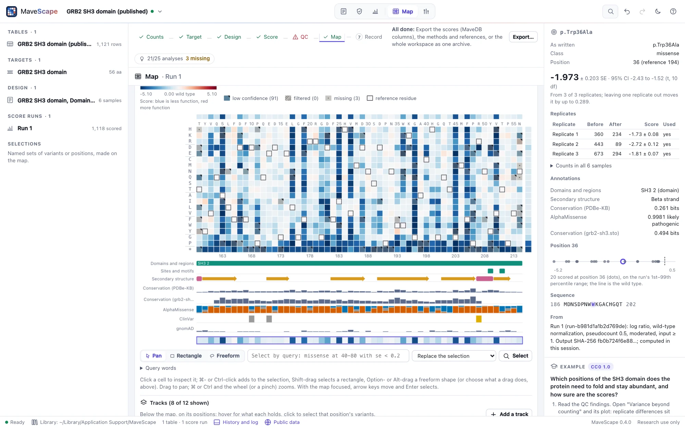
Below the map, on its positions and moving with it, Tracks lines up what else is known about each position. Hover a track for what it holds there; click it to select that position's variants (a domain's: every position it covers). Add a track:
- From public data, through the MaveScape program, by the target's accession or gene only (Public data): UniProt's features (domains and regions, sites and motifs, secondary structure); conservation from PDBe-KB's profile of the protein's homologues; AlphaMissense's pathogenicity of every substitution (human proteins); ClinVar's classifications, with their review status as stars; gnomAD's allele frequencies; and for a run of a MaveDB record, MaveDB's own join of ClinVar and gnomAD to its variants.
- From a file: your alignment (A3M, FASTA, Stockholm, Clustal; conservation scored as Capra and Singh's
score_conservation.pyscores it), a predictor's scores (AlphaMissense's, EVE's or ESM1b's downloads, or any table of protein variants and scores), or a custom track (GFF3, or a table of values by position or of stretches). Alignments and GFF3 files can also be dropped on the window.
The run's own tracks are there too, to show when wanted: the reference's residues, coverage (the share of each position's designed substitutions scored), the position effect (the median score, from the wild type's) and its uncertainty (the median SE). In the panel, each track can be shown or hidden, moved, filtered (features by kind; ClinVar by class and review status; gnomAD by frequency), or removed, and names its source: the service, its release and the date it was retrieved, or the file. An annotation numbered on a reference is placed by the target's offset, and only where the target has the residues it names: one that disagrees is refused, saying why, rather than drawn in the wrong place. Annotations are kept with the workspace and its archive, so they reopen offline, and the methods name each with its source and cite it. The inspector shows a variant's annotations: its ClinVar records, gnomAD frequency, predictors' scores, and the features and conservation at its position. Export writes the map with its tracks (SVG, PNG) and the tracks shown, position by position (CSV).
Selections
Click a cell to select it and see it in the inspector; ⌘-click adds to the selection; ⇧-drag selects a rectangle, ⌥- or Alt-drag a freeform shape; or type a query below the map, such as missense at 40-80 with se < 0.2. Save as… keeps the selection by name in the workspace (with its query), listed in the dataset tree and under the map, where saved selections are combined; Export writes the selected variants with their scores (CSV) or the selection itself (JSON). The query language, set operations and the selection in the other views: Selections.
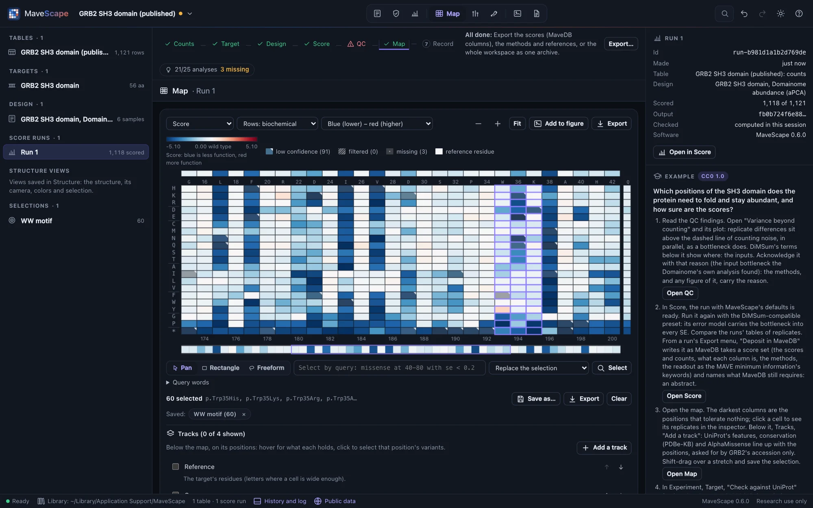
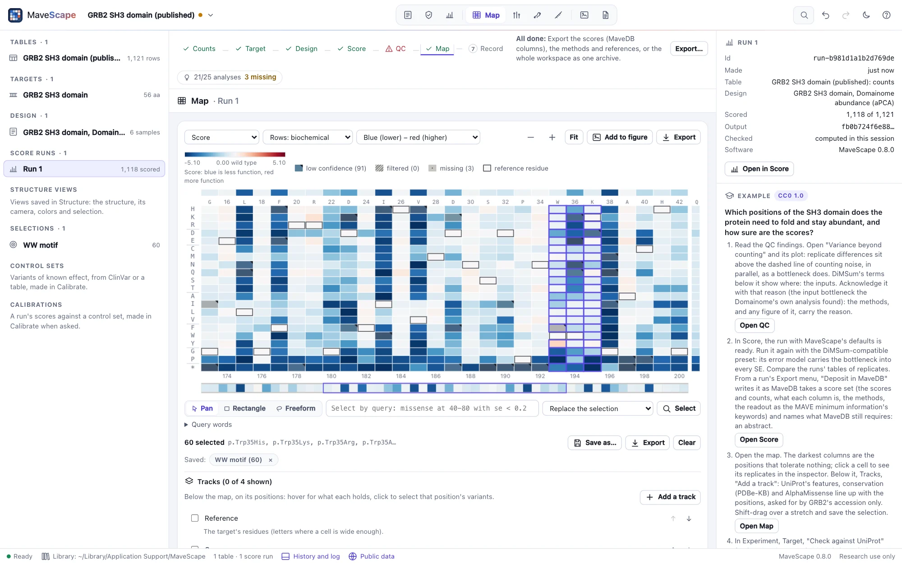
The variant inspector
For a variant, the inspector shows its name as written and in MAVE-HGVS, its class and position; its score with standard error and 95% interval (with the moderated combination, by t at the degrees of freedom shown; for rescaled scores, the anchors' uncertainty, SE_scale, beside it), or why it has none (the filter stage that left it out); its flags; each replicate's counts before and after selection, score and whether it was used; with conditions compared, its score in each and each difference with its interval and q (paired, each pair's difference too); every sample's counts; the other substitutions at its position against the run's range; the sequence around it; and the run it comes from.
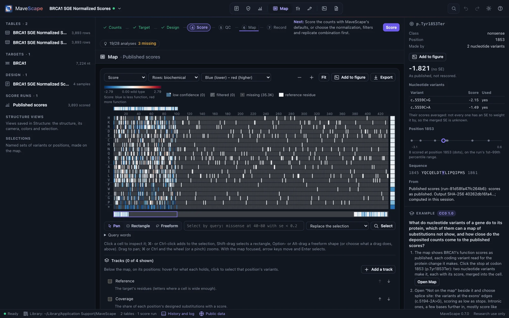
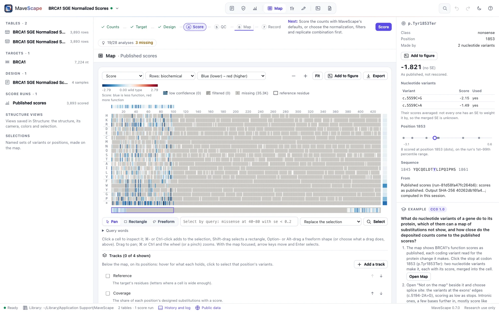
A nucleotide variant also shows its protein change and the base it is at. A protein variant of a nucleotide run (a cell of its map) shows its merged score and the nucleotide variants that make it, each with its score and whether it was used; click one to inspect it. When the table was opened from MaveDB with its mapped variants, the inspector adds Mapped by MaveDB: the variant's HGVS on the human reference, its GA4GH VRS identifier and its ClinGen allele (Public data).
Export
Export writes the map as SVG (vector, for figures) or PNG at three times the resolution, in the export theme, with its legend and the tracks shown, and the tracks shown as a table (CSV).
In words and by keyboard
Below the map, In words describes it: the cells in each state, the least and most tolerant positions, the scale, and each track shown. Every cell is also in a table. With the map focused, the arrow keys move between cells, each announced, and Enter selects. Color-vision-friendly colors are a setting in the appearance menu.